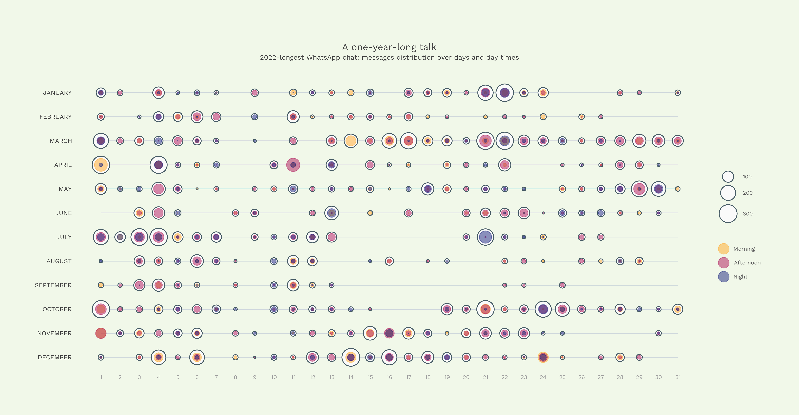
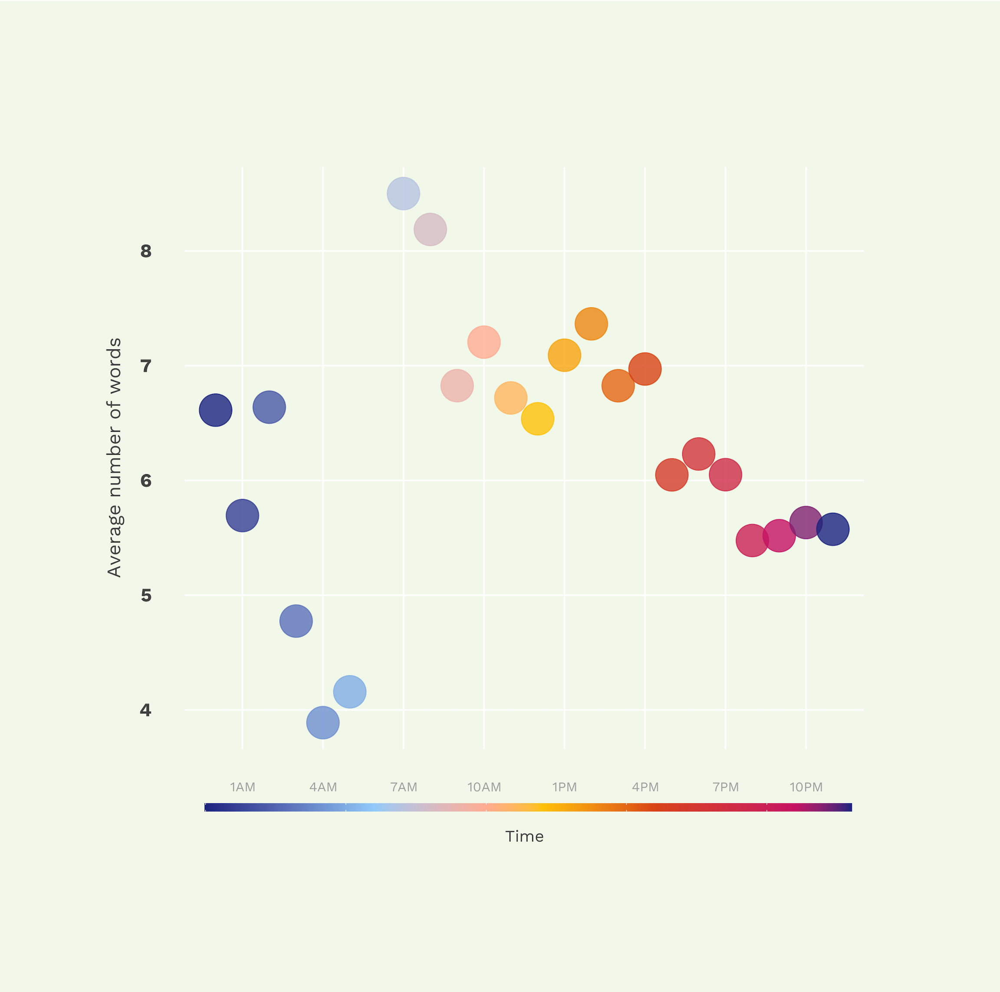
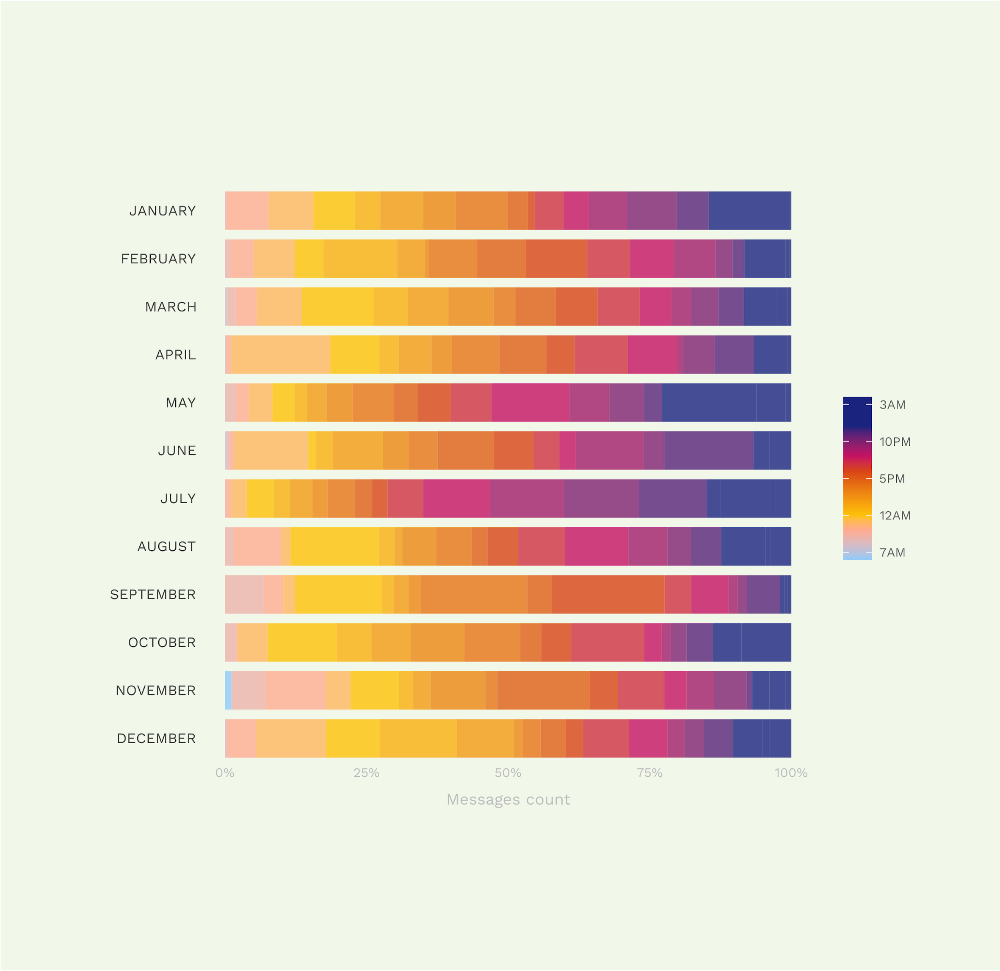
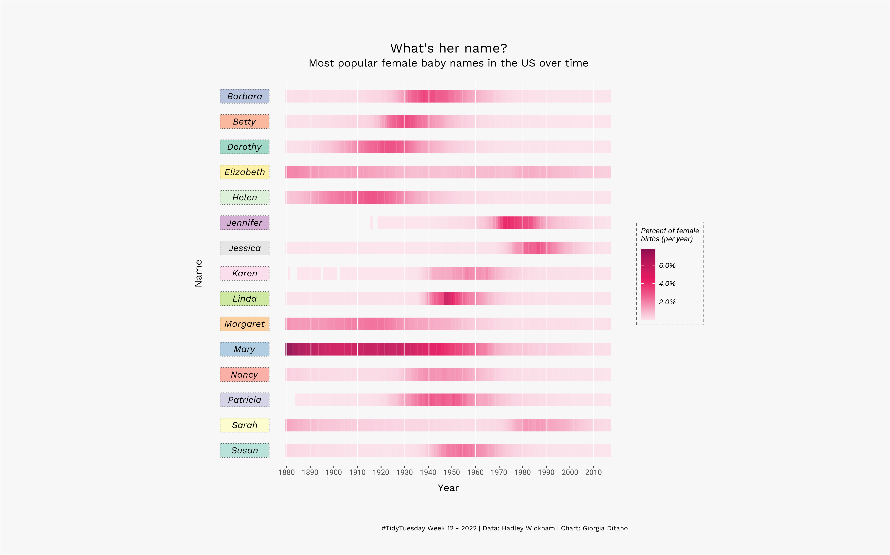
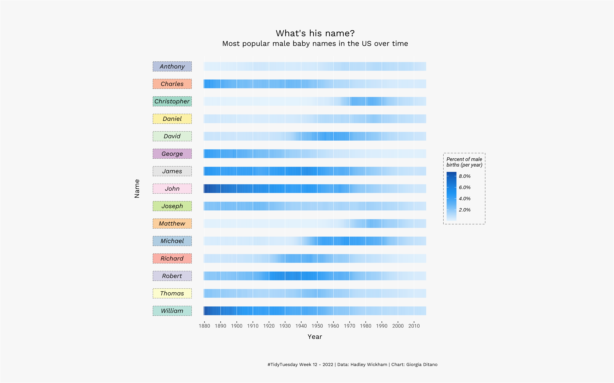
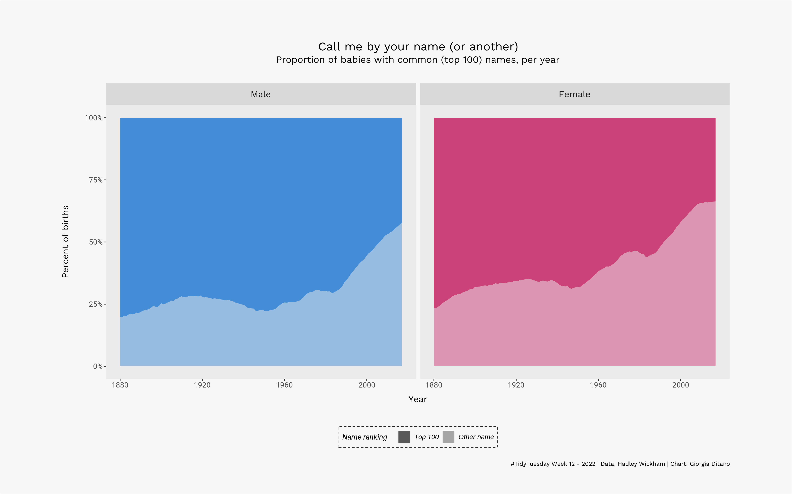
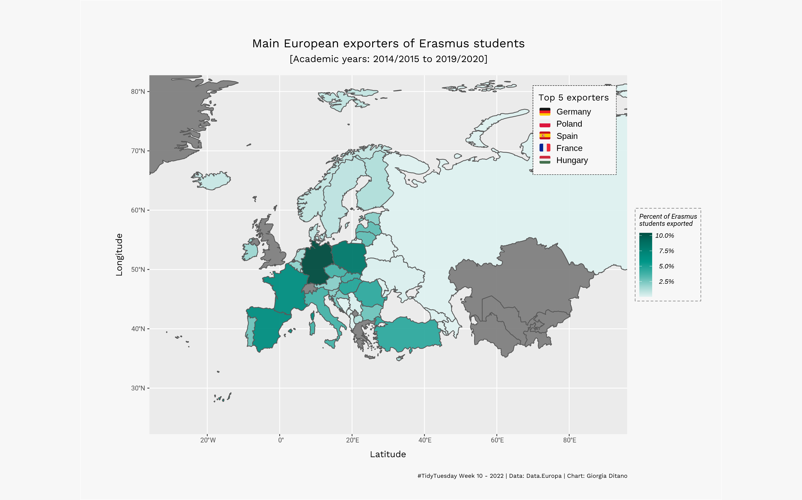
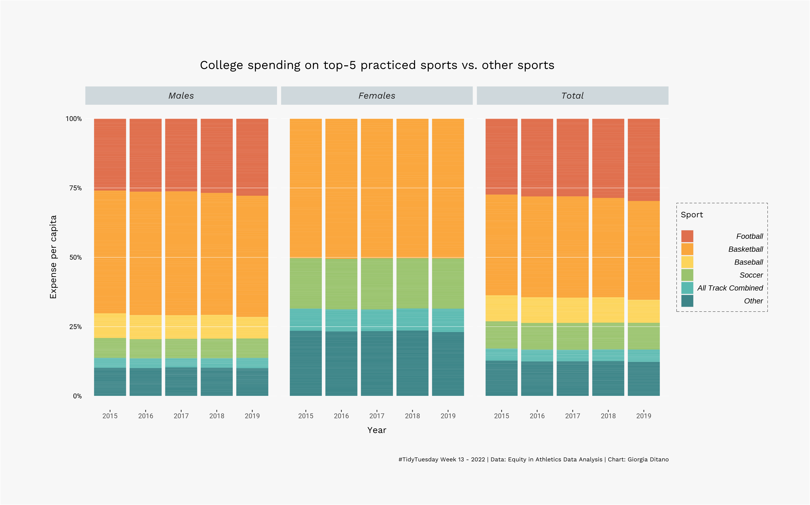

Data-viz projects
A one-year long talk
December 2022
Outline: sometimes, it is fun to look back when the end comes. A one-year-long talk is a short ride in the longest WhatsApp talk I had over the 2022.
Tools: Python (cleaning, wrangling), R (visualization).
Source code



FIFA World Cups
July 2022
Outline: first D3 project. An exploration of participants and storylines of FIFA World Cups over the history.
Tools: Observable, D3.
Source code
#tidytuesday
March-April 2022
Outline: some submissions to Tidy Tuesday - project providing a safe and supportive forum for individuals to practice their wrangling and data visualization skills in th R ecosystem.
Tools: R.
Source code




